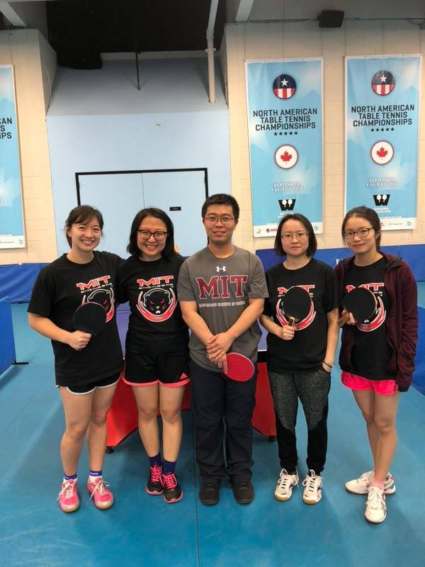

|
 |
|
 |
|
2022 - 2023 MIT Table Tennis Team
Tryouts have not yet been held for this season's MIT Table Tennis Team. Keep an eye out for updates!
2021 - 2022 MIT Table Tennis Team
Tryouts took place on Friday, September 24, 2021. Congratulations to the new MIT Table Tennis Team!
| Co-ed Team | Women's Team |
|---|---|
| Ilya Andreev | Maria Castillo |
| Maria Castillo | Jingting Lin |
| Eddie Chen | Anastasia Nikolakopoulou |
| Jingting Lin | Sophie Wu |
| Fabian Mohr | Wan-Ni Wu |
| Anastasia Nikolakopoulou | |
| Jie Xu | |
| Yilun Xu |
Team members are listed in alphabetical order.
2018 - 2019 MIT Table Tennis Team
Co-ed Team (In alphabetical order)
Andrew Ilyas
Andrew Zhang
Brian Mills
Elton Lin
Jie Xu
Siddharth Sridhar
Tzyy-Shyang Lin
Yixi Liu
Women's Team (In alphabetical order)
Fei Song
Michelle Hung
Yixi Liu
Yizhen Xie
Yu-Chien Huang
Team Coach
Carlos Espinoza-Toro
2017 - 2018 MIT Table Tennis Team

Women's Team at Northeast Regional Championships. Left to Right: Jasmine, Sherry, Tianjiao, Yixi, Hong
Co-ed Team
Andrew Ilyas
Andrew Zhang
Jin Xue
Tzyy-Shyang Lin
Qiyang Lu
Women's Team
Hong Wang
Jasmine Lennert
Sherry Yang
Yixi Liu
Team Coach
Tianjiao Ji
2016 - 2017 MIT Table Tennis Team

Left to Right: Tzyy-Shyang, Jin, Artem, Sherry, Shiyao, Heng, Andrew Zhang, Fei, Andrew Ilyas, Hong
Co-ed Team
Artem Timoshenko
Andrew Zhang
Jin Xue
Tzyy-Shyang Lin
Andrew Ilyas
Shiyao Liu
Women's Team
Heng Zuo
Hong Wang
Sherry Yang
Fei Song
Check out our Facebook group here, or browse our photo gallery here.
Team Record
2017 - 2018 New England Divisional Tournament - Women's Team, 1st Place
2017 - 2018 New England Divisional Tournament - Co-ed Team, 3rd Place
2016 - 2017 New England Divisional Tournament - Co-ed Team, 2nd Place
2012 College Table Tennis National Championships - Women's Team, 11th Place
2012 Northeast Regional Tournament - Women's Team, 2nd Place
2011 - 2012 New England 2 Divisional Tournament - Women's Team, 1st Place
2011 - 2012 New England Regional Tournament - Team A, 3rd Place
2010 - 2011 New England Regional Tournament - Team A, 3rd Place
2009 - 2010 New England Regional Tournament - Team A, 3rd Place
NCTTA Results
Team Archives
MIT Table Tennis Club. Maintained by Sophie Wu.